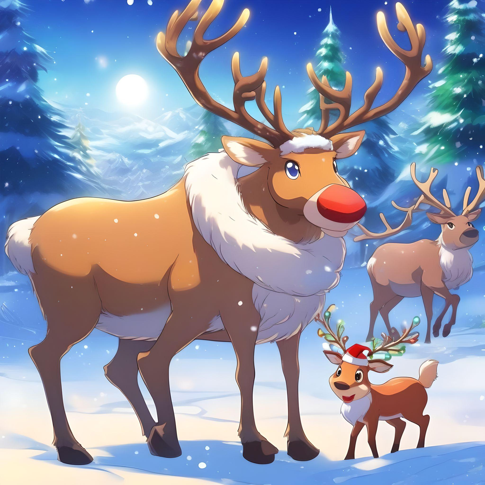
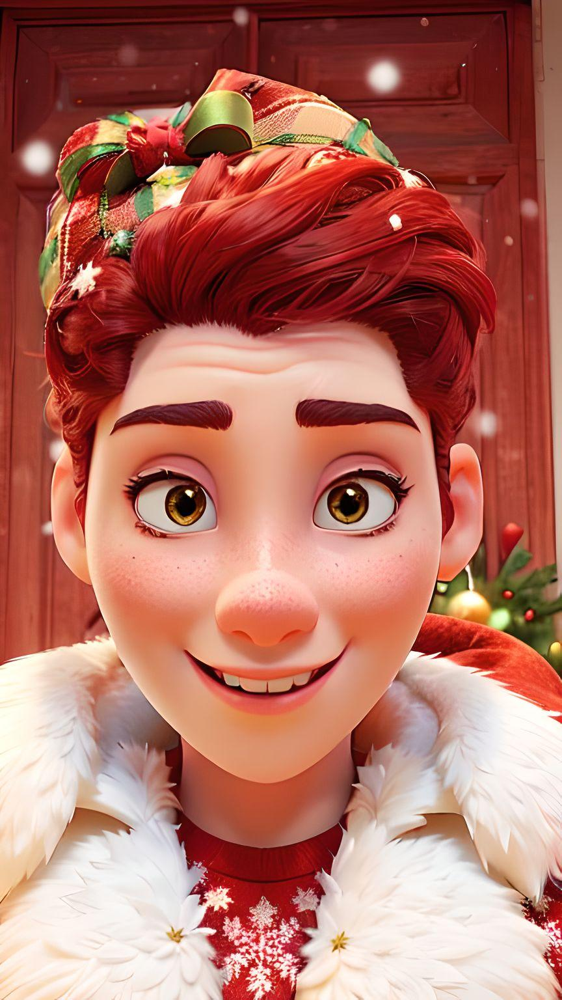

Velkommen til Nordpolen
Om Nissen
Nissen jobber året rundt med å planlegge og lage gaver til alle verdens barn. Han leder nisseverkstedet med hjelp fra sine trofaste alver.
I nisseverkstedet arbeider alvene dag og natt for å lage magiske gaver til jul. Her skapes leker, pakker og juleglede for barn over hele verden.
Velkommen til Nordpolen
Velkommen til Nordpolen! Her bor og arbeider Nissen, Nissemor og reinsdyrene. Juleverkstedet er fullt av magi, hvor alvene lager gaver til alle barn i verden.
Nissens reinsdyr er hans lojale hjelpere, som sørger for at gaver kommer frem i tide. Rudolf, med sin røde nese, leder alltid flokken.
Nissemor er hjertet av Nordpolen! Hun holder alt i orden, baker småkaker og sørger for at Nissen alltid er klar for sin store tur på julaften.